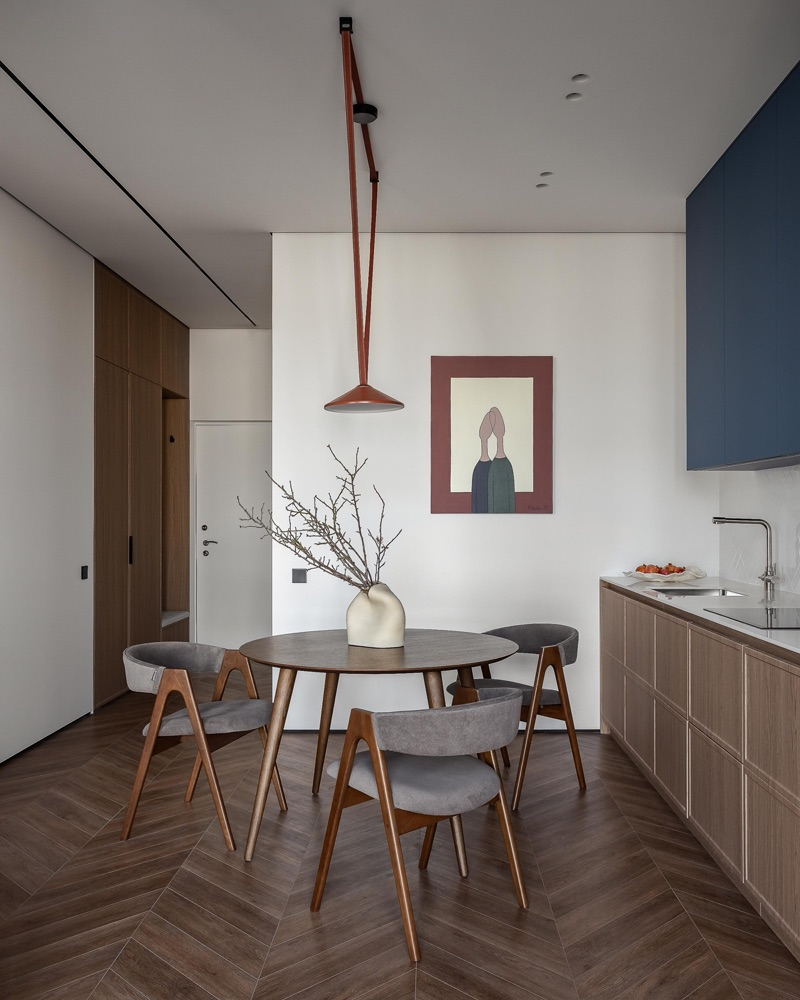
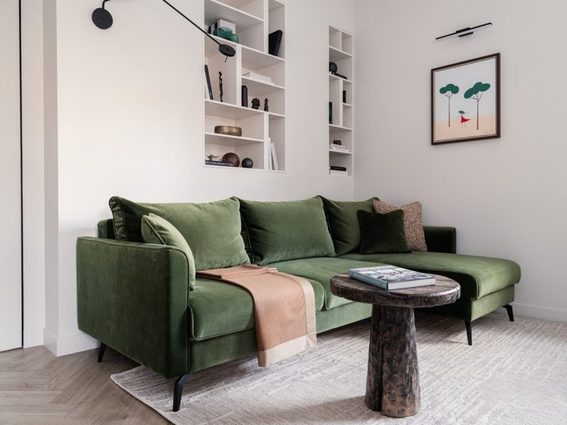
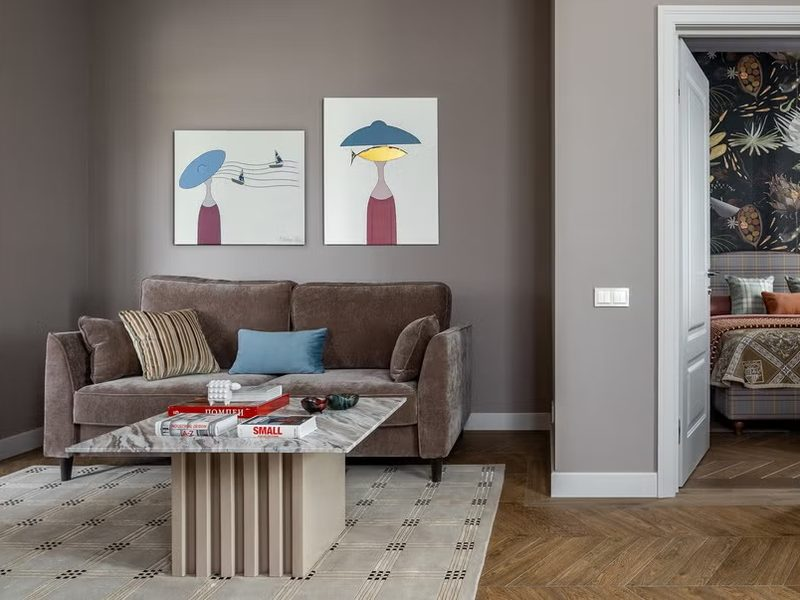

Мань, ты писала, что у новых картин по 16 лайков, а раньше было больше. Я пролистал твой профиль пост за постом: всё с сентября и для сравнения весну, прошлый год и 2022-й. А потом сверил со статистикой, которую ты прислала. Ниже - что я увидел в твоих же цифрах и план на месяц под них.
Коротко
Почему лайков стало меньше
У тебя 1 573 подписчика, и профиль живой: ты публикуешь часто, подписи с юмором, люди отвечают. Но посты с одной картиной в ноябре собирают заметно меньше, чем раньше:
~25лайков у поста с картиной в ноябре
~38у таких же постов в сентябре и октябре
38-56весной 2025
~50когда в кадре ты, в те же месяцы
С роликами то же самое. Ролики «картина + музыка» без тебя набирают 250-460 просмотров, а ролики, где есть ты или живая история с текстом поверх, - от 1 700 до 2 500.
При этом показывают тебя не меньше, а больше. Вот твоя статистика за 24 октября - 23 ноября:
16 005просмотров за месяц, на 16 % больше, чем месяцем раньше
✓статус аккаунта зелёный, никаких ограничений
+15подписчиков за месяц, а роликов посмотрели 6,4 тыс. человек
13 и 37пересылок и сохранений за месяц, на 826 лайков
Людей приходит больше, но они реже останавливаются: лайк, сохранение, пересылка, подписка. Отсюда и меньше лайков на посте с картиной. Значит, задача не в том, чтобы тебя показывали, а в том, чтобы, увидев, останавливались и подписывались.
Вывод: дело не в картинах и не в показах, а в формате. Instagram всё больше показывает посты тем, кто на тебя ещё не подписан, и такие люди останавливаются на человеке, а не на предмете. Картина без тебя для них - «ещё одна красивая картинка». А часть подписчиков из России заходит реже, потому что Instagram у нас открывается только через VPN.
Что предлагаю. Публиковать не чаще, а иначе: чуть больше тебя в кадре, ролики с текстом поверх, в конце подписи просьба переслать или сохранить, не два похожих поста подряд. Подправить в профиле пару строк, закреплённые посты и порядок «Актуального». И попробовать совместные посты с декораторами: единственный такой ролик у тебя набрал 2 380 просмотров. Всё бесплатно, без рекламы и «сервисов продвижения».
Что у тебя уже работает
2 545просмотров - кисти в стакане под трендовый звук, потом «Отбрось всё!» · 9 октября
2 380ролик вдвоём с @nikafeigina, опубликован соавторством · 2 мая
1 797«pov: looking for people who understand my art style» - ты у картины, текст поверх · 3 ноября
1 691«6 лет назад ушла из офиса и стала художницей» · 25 марта
97 ♥«Хочу коллаборацию со студией йоги!» - ты и серия Naked yoga, 20 комментариев · 30 сентября
77 ♥ты с журналом Hi home у своей картины · 17 октября
64 ♥воспоминание о первой выставке в Берлине · 14 сентября
Во всех лучших постах есть ты, твой голос или живое действие. На этом и строим план.
Reels - короткий вертикальный ролик. Именно его Instagram охотнее всего показывает новым людям.
Карусель - пост из нескольких фото, которые листают вбок.
Stories - фото или видео, которые видны сутки. В них можно поставить ссылку.
Охват - сколько разных людей увидели публикацию.
Collab, соавторство - один пост сразу в двух профилях, твоём и чужом.
Текст поверх - надпись прямо на ролике, кнопка Аа, как в твоём «pov».
Хештег - слово с решёткой, по нему ищут похожие посты.
Метка в ссылке - хвост ссылки, по которому я вижу на сайте, что человек пришёл из Instagram.
Профиль у тебя уже собран хорошо. Человек пришёл с ролика и за пару секунд решает, смотреть ли дальше, поэтому поправим только то, что мешает дойти до картины. Всё правится в Редактировать профиль.
Имя
Сейчас
Мария Полушкина | Художница
Уже почти идеально, можно оставить. Если хочешь, чтобы тебя находили и те, кто ищет просто «картины», можно добавить это слово. Это по желанию. Имя меняется не чаще двух раз за 14 дней.
Вариант имени
Мария Полушкина | художник, картины
Описание
Сейчас
▪️Пишу картины каждый день
▫️Ироничная живопись
▪️Выставки в России и Европе
🔻Каталог работ по запросу
↓
Твои строки остаются, меняется только последняя. «Каталог по запросу» заставляет человека писать и ждать ответа, а на сайте все картины уже с ценами, и их можно примерить на свою стену:
Описание профиля
▪️Пишу картины каждый день
▫️Ироничная живопись
▪️Выставки в России и Европе
🔻Все картины с ценами и примеркой - на сайте
Ссылки
Сейчас в профиле сайт «и ещё 2» ссылки, какие - снаружи не видно. Ссылку на сайт замени на такую же, но с меткой: тогда я увижу в статистике сайта, сколько людей пришло из профиля. И проверь, есть ли среди ссылок Telegram-канал. Если нет - добавь (Instagram разрешает до пяти).
1. Ролик о книге «Женщины внутри женщины» (апрель 2025)
2. Биография ru/en (2021, 242 лайка - самый любимый пост профиля)
3. «У меня вышла вторая книга!» (март 2025)
↓
Ролик о книге - оставить. Книга остаётся на виду.
Биографию - оставить, но удалить под ней спам: там около восьми комментариев вида «проверьте директ», их видит каждый, кто открывает пост. Смахни комментарий влево (на Android - нажми и подержи) → значок корзины. Там же можно ограничить автора.
«Вторая книга» - открепить (⋯ → Открепить), книга и так в первом ролике. На это место - «Мои картины в живых интерьерах» (31 октября) или ролик с Hi home (17 октября, 77 лайков): покупатель сразу видит, что твои картины висят в настоящих домах.
Когда выйдет карусель «Кто я и как купить» (ниже), её тоже стоит закрепить вместо одного из трёх, на твой выбор. Закрепить: на посте ⋯ → Закрепить в профиле.
Актуальное
Кружков у тебя уже 11, новые заводить не нужно. Нужные для покупателя уже есть, их только поставить вперёд:
Сейчас
В наличии!СъёмкиЦветаева!Пальчики💅Женщины!Process🎨Me!Выставки 2022СМИЦеныЛУНА
↓
Предлагаю
В наличии!Как купитьСъёмкиСМИProcess🎨Me!Женщины!Цветаева!ЛУНАПальчики💅Выставки 2022
«Цены» → «Как купить». Переименовать: открой кружок → ⋯ → Редактировать актуальное. И добавь туда свежую Stories со ссылкой на сайт.
Порядок. Перетащить кружки руками нельзя: первым встаёт тот, куда последним добавили Stories.6 Поэтому добавь по свежей Stories по очереди: сначала в «СМИ», потом «Съёмки», «Как купить» и последней - в «В наличии!».
«Пальчики» и «Выставки 2022» уедут в конец сами. Если не жалко - можно убрать в архив.
Пост «Кто я и как купить»
Карусель для тех, кто зашёл впервые. Слайды: 1) ты рядом с картиной - первым, потому что с тобой посты собирают вдвое больше; 2-3) пара картин крупно; 4) картина в интерьере из журнала; 5) слайд с тремя шагами «как купить» - его нарисую я. Подпись поправь под себя:
Подпись к посту
Привет! Я Маша Полушкина, художник. Пишу картины, в которых всегда есть немного иронии 🙂
⠀
Как купить картину:
1. Выберите на сайте artpolushkina.com - там все работы с ценой и размером. Кнопка «Примерить на стене» покажет картину у вас дома.
2. Напишите мне в директ или в Telegram.
3. Договоримся о доставке - по России и за границу.
⠀
Ссылка на сайт - в профиле. Новые картины первыми - в Telegram: t.me/artpolushkina
⠀
#современноеискусство #ироничнаяживопись #картинавинтерьер #художникмосква #artforinterior
3
Что публиковатьне чаще, а иначе
Ты публикуешь много: 14 постов с 1 по 24 ноября, около четырёх в неделю (в сентябре и октябре было около двух). Чаще не нужно. Но отклик на каждый пост в ноябре стал меньше: посты делят между собой одних и тех же зрителей. Поэтому оставляем твой ритм и меняем состав.
Главное правило - ты в кадре. Одна картина собирает около 25-30 лайков, ты с картиной - около 50 (от 37 до 97). Это может быть совсем просто: ты держишь картину, вешаешь её, стоишь рядом на выставке, рука с кистью.
1 в неделю
Ты в кадре
Ролик или фото, где есть ты. Как «pov» (1 797 просмотров), Hi home (77 лайков), Naked yoga (97).
ты у картины + текст поверх
процесс: руки, кисти, золотая нить
короткая история о себе
2-3 в неделю
Картины
Карусели с картинами, как ты делаешь сейчас.
картина целиком
деталь крупно
картина в интерьере или в руках, чтобы был виден размер
последний слайд или строка: «цена и примерка - ссылка в профиле»
3-4 раза в неделю
Stories
По 1-3 кадра, для тех, кто уже подписан, и для перехода на сайт.
репост своего нового поста
кусочек мастерской
опрос «Какую повесить в спальню: 1 или 2?»
ссылка на страницу картины (раздел 6)
Не два похожих поста подряд. Овалы-медальоны «Кипарис» и «Пиния» вышли с разницей в день, с одним и тем же текстом, и собрали 24 и 16 лайков. Похожие работы лучше одной каруселью («три медальона») или через день-два, с другим постом между ними.
Когда. Пока вечер буднего дня, 19:00-21:00 по Москве. Если пришлёшь вкладку «Аудитория» (раздел 1), поставим точное время по твоим зрителям.
Подпись к посту
Твоя формула уже хорошая, менять её не надо:
Как у тебя сейчас
Шутка или мысль первой строкой - «В голове какая-то / ПУТАНИЦА»
НАЗВАНИЕ
Холст, акрил, размер
«Доступна» или «Пишите 📩»
Первая строка у тебя почти всегда цепляет, только её и видно до «ещё». Добавить нужно одно: в конце сказать, куда идти и что сделать. Сейчас этого нет ни в одной подписи, а «Каталог по запросу» заставляет писать и ждать. Ссылки в подписи не нажимаются, поэтому «ссылка в профиле». А пересылка другу - самый сильный сигнал для Instagram показывать пост дальше.
В конец подписи · картина доступна
Доступна! Цена и примерка на вашей стене - ссылка в профиле.
Перешлите тому, у кого есть стена под эту картину 😉
В конец подписи · вариант
Цена и примерка на вашей стене - ссылка в профиле.
Сохраните, если выбираете картину домой 🤍
В конец подписи · картина продана
Эта уже у новых хозяев. Похожие - по ссылке в профиле, или напишите мне, обсудим новую.
Хештеги: добавить 3-5
У тебя их нет с 2022 года, тогда ставила по 5-8. Это не ошибка, но 3-5 хештегов в конце подписи помогают найти тебя тем, кто ищет картину, а не тебя по имени. Больше пяти не нужно.2 Формула: 1-2 про жанр, 1-2 про интерьер и одно слово по сюжету. Три готовых набора, последний тег меняй под картину:
Слово по сюжету: #море, #шампанское, #новыйгод, #шляпа, #цветы, #кипарисы и так далее. Наборы можно чередовать.
4
Роликитри готовых и живые по твоим лучшим
Я сделал три ролика из твоих анимаций, тех же, что на сайте, под вертикальный экран. Скажу честно: это формат «картина + музыка», а он у тебя набирает меньше всего («Лето» - 248 просмотров, книга - 304, «Золото на чёрном» - 460). Ролики с тобой и текстом поверх - в 4-5 раз больше. Поэтому анимации выкладываем так:
Текст поверх - обязательно, в духе твоего «pov». Варианты ниже, их можно скопировать.
Лучше начать с тебя: 1-2 секунды, как ты подходишь к этой картине или держишь её, потом анимация. В Instagram при создании ролика можно выбрать два видео из галереи подряд, они склеятся сами.
Музыка - как ты и делаешь: из библиотеки Instagram, кнопкой Добавить аудио. Своя или скачанная может заглушить ролик.
Обложку выбери при публикации (Изменить обложку): последний кадр, картина как она есть.
CHEERS!
9 секунд · неделя 1, пятница вечером
Вылетает пробка, брызги, бокалы на кофтах наполняются и пустеют.
Ещё вариант текста: «Картина, которая знает, как отмечать пятницу»
Текст поверх
pov: пятница, 19:00
Подпись
Двое под одной бутылкой и три бокала на двоих. Кто-то явно пришёл со своим 🥂
⠀
CHEERS!
Холст, акрил. 80х70 см.
⠀
Доступна! Цена и примерка на вашей стене - ссылка в профиле.
Перешлите тому, с кем у вас всегда есть повод 😉
⠀
#современноеискусство #ироничнаяживопись #картинавинтерьер #contemporaryart #шампанское
Прыжок с вышки, круги по воде, верх купальника улетает на вершину горы. Это та же картина, что в твоём лучшем ролике с кистями (2 545 просмотров), так что можно подать как продолжение.
Ещё вариант текста: «pov: понедельник, отбросить всё»
Текст поверх
Помните кисти? Вот что было дальше
Подпись
Иногда надо просто оттолкнуться и прыгнуть. Всё лишнее отлетит само - даже то, что казалось очень важным 🌊
⠀
ОТБРОСЬ ВСЁ!
Холст, акрил. 80х60 см.
⠀
Доступна! Цена и примерка на вашей стене - ссылка в профиле.
Сохраните на понедельник 😉
⠀
#современноеискусство #живописьакрилом #картинавинтерьер #figurativepainting #море
Вечерняя версия: снег сыплется по комнате, загораются огоньки на ёлке. В конце проявляется настоящая, светлая картина, поэтому в подписи об этом строка.
Ещё вариант текста: «Картина, которую ещё можно успеть подарить»
Текст поверх
pov: до Нового года - чуть-чуть
Подпись
За окном снег, ёлка уже стоит, а праздник ещё где-то в пути. Самое сладкое время - время ожидания ✨
В ролике картина ненадолго «зажгла свет» по-вечернему, а в конце - она такая, какая есть.
⠀
В ПРЕДВКУШЕНИИ
Холст, акрил. 70х60 см.
⠀
Доступна! Цена и примерка на вашей стене - ссылка в профиле.
Перешлите тому, кто ещё не придумал подарок 🎄
⠀
#современноеискусство #картинавинтерьер #новыйгод #acrylicpainting #artforinterior
На телефоне «Скачать ролик» откроет видео: дальше Поделиться → Сохранить видео, и он окажется в галерее. Тот же файл выкладывай и в Telegram-канал.
Пробный ролик. В твоей панели есть «Пробные видео Reels», а при публикации может быть переключатель «Пробный ролик». Такой ролик сначала покажут только тем, кто не подписан. Удобно, чтобы проверить анимацию, не занимая место в ленте подписчиков.3
Живые ролики - по твоим лучшим
Самые сильные ролики ты уже сняла сама. Предлагаю повторить то, что сработало, раз в неделю-две, на 7-20 секунд с телефона:
как «pov» · 1 797
Ты у картины + фраза
Ты стоишь у картины или держишь её, сверху одна фраза. Например:
«pov: картина уехала к новым хозяевам»
«pov: меня спросили, что я имела в виду»
«pov: ищу стену для этой картины»
как кисти · 2 545
Процесс под трендовый звук
Предмет из мастерской, потом готовая картина: кисти, палитра, катушка золотой нити, эскиз → холст. Звук - из популярных в Instagram прямо сейчас: у таких треков в библиотеке стоит стрелка ↗.
как «ушла из офиса» · 1 691
Короткая история
Ты говоришь в камеру или текст поверх, 15-20 секунд. Темы, которые просятся:
откуда взялась золотая нить
почему овалы-медальоны
как ушла первая картина
как с Никой · 2 380
Ролик вдвоём
С декоратором, фотографом, другим художником или журналом - и опубликовать соавторством, чтобы он вышел у обоих. Подробнее в следующем разделе.
Дальше - ещё шесть анимаций
Оживлённых картин у нас девять. Если первые три с текстом поверх наберут хотя бы как твои обычные ролики (сейчас в среднем около 700), сделаю такие же из остальных:
Поплыли!Последняя капляОна ждала дождяЧерез монокльВ унисонYou Can Leave Your Hat On
5
Главный рычаг - декораторысовместные посты
Совместный пост (в Instagram он называется «Соавторство», по-английски Collab) - это один пост, который сразу появляется в двух профилях: у тебя и у декоратора. Лайки, комментарии и просмотры у него общие.
Доказательство у тебя уже есть:
2 380просмотров у ролика с @nikafeigina - он вышел соавторством
92 ♥у того же ролика
746просмотров у поста про Hi home, где 6 человек отмечены в тексте
77 ♥у поста про Hi home
Пост про Hi home стал одним из лучших даже без соавторства. Выйди он совместным, он попал бы ещё и в ленты декораторов и журнала. А их подписчики - люди, которые делают ремонт и думают, что повесить на стену, то есть твои покупатели. И это решает «в журналах автора не указывают»: в совместном посте твоё имя стоит на самом посте.

My Decor, 2025

Salon, 2025

Elle Decor, 2026
Как сделать
Договориться с декоратором (текст сообщения ниже).
Кто-то из вас выкладывает фото интерьера с твоей картиной. При публикации: Отметить людей → Пригласить соавтора → выбрать второй профиль.
Второй принимает приглашение, и пост появляется у обоих.
Когда декоратор выкладывает Stories со съёмки, попроси отметить тебя, и сразу перепости.
Соавторов, по сообщениям, можно добавить больше одного: например, декоратора и фотографа.4 Одного-двух совместных постов в месяц хватит.
С кого начать - с Hi home
Материал готов, люди уже отмечены в твоём посте от 17 октября. Можно попробовать пригласить соавтора прямо в этот пост: ⋯ → Изменить → Отметить людей → Пригласить соавтора.7 Если такой кнопки нет - предложи декоратору выложить свой пост с тобой соавтором.
Остальных, кто брал твои картины для съёмок, назови мне просто по именам или по журналам - аккаунты найду сам и соберу список.
Сообщение декоратору
Это основа, пиши своими словами:
Сообщение в директ
Здравствуйте! Это Мария Полушкина, моя картина «…» была в вашей съёмке. Очень красиво получилось! Можно выложить фото совместным постом, чтобы он был и у вас, и у меня? Отмечу вас как автора интерьера. И если будете выкладывать Stories со съёмки, отметьте меня, пожалуйста, @artpolushkina, я с радостью перепощу.
Твой приём с йогой - для декораторов
Пост «Хочу коллаборацию со студией йоги!» собрал 97 лайков и 20 комментариев - лучший за осень. Тот же приём можно повторить для интерьерщиков: ты с картинами, призыв и просьба отметить знакомого декоратора. Подпись поправь под себя:
Подпись к посту-призыву
Хочу коллаборацию с декораторами и дизайнерами интерьеров! 🛋
⠀
Мои картины уже были в съёмках для Hi home, ELLE Decoration, My Decor и Salon, и мне очень нравится видеть их в живых интерьерах.
Если готовите съёмку или проект и ищете картину на стену - пишите, обсудим 🤍
⠀
Отметьте в комментариях декоратора, которому это пригодится!
⠀
#картинавинтерьер #искусстводляинтерьера #дизайнинтерьера #interiorart #artforinterior
Если журнал вышел без твоего имени
Выложи карусель сама: страница журнала или фото интерьера, потом твоя картина крупно. Отметь декоратора и журнал. Для покупателя это лучшее доказательство, что твои картины выбирают для настоящих домов.
Подпись, заполнить «…»
Моя картина «…» в интерьере @… для журнала … ✨
Спасибо за красивую съёмку!
⠀
«…»
Холст, акрил. … см.
Цена и примерка на вашей стене - ссылка в профиле.
⠀
#картинавинтерьер #искусстводляинтерьера #современноеискусство #interiorart #artforinterior
6
Путь к покупкеиз Instagram на сайт
У каждой картины на сайте своя страница с ценой, размером, кнопкой «Купить» и «Примерить на стене». В подписи к посту ссылки не нажимаются, а в Stories нажимаются. Поэтому в тот же вечер, что и пост с картиной, выкладывай Stories со ссылкой на неё.
Как поставить ссылку в Stories
Создай Stories: кадр картины или кусочек ролика.
Вверху нажми значок стикеров (квадратик со смайликом) → Ссылка.
Вставь ссылку (ниже готовые).
Настроить текст стикера → напиши «Цена и примерка».
Поставь стикер на видное место, но не в самый низ, там его закроют кнопки.
По хвосту ссылки (метке) я вижу на сайте, что человек пришёл из Instagram и что он там делал. Для другой картины в ссылке меняются только два числа: номер работы после «work/» и в конце. Номер видно в адресе страницы картины на сайте, или спроси меня.
Многие покупатели в России без VPN, их дом - Telegram. Каждый ролик выкладывай и в канал t.me/artpolushkina: тот же файл, та же подпись, а ссылка на картину там нажимается. Для канала - своя метка:
Раз в две недели в Instagram - Stories «Новые картины первыми - в Telegram» со ссылкой на канал.
В канале то, чего нет в Instagram: мастерская, откуда взялся сюжет, «картина уехала к новым хозяевам». Тогда есть смысл подписаться на оба.
Вопросы в директе - отвечать в тот же день. Для покупателя это главное, и Instagram это тоже замечает.
7
Чего не делатьчастые причины ограничений
Не покупать лайки, подписчиков и «живые охваты», не подключать сервисы автолайков и автоподписок, никому не давать пароль «для продвижения».
Не выкладывать ролики с водяным знаком TikTok или CapCut и чужие видео: Instagram прячет неоригинальное.
Не удалять и не перезаливать пост, если он «плохо пошёл». Лучше выложить новый.
Не ставить свою или скачанную музыку в ролики, только из библиотеки Instagram - как ты и делаешь.
Картины с ню - в карусели, не в ролики: статус у тебя зелёный, пусть так и остаётся.5
Не чистить подписчиков массово, даже если много «мёртвых»: это тоже выглядит подозрительно.
8
План на 4 неделиотмечай, что сделано
Остальные посты - как обычно, в твоём ритме: с хвостом подписи и хештегами, и не два похожих подряд. Галочки сохраняются в этом браузере. Пометка ты - твоё, я - моё.
9
Кто что делает
Ты
Один раз: строка описания, закреплённые, спам под биографией, порядок «Актуального».
Каждую неделю: публиковать как сейчас, но хотя бы раз - с тобой в кадре; ролики с текстом поверх; Stories со ссылкой.
Первое соавторство - с Hi home, потом 2-3 декоратора.
Отвечать в директе в тот же день.
Раз в месяц - скрины статистики, как 24 ноября.
Я
Ролики из анимаций, подписи и тексты поверх к ним.
Слайд «Как купить» и тексты к каруселям.
Ссылки с метками для каждой картины.
Список декораторов и их аккаунтов.
Раз в месяц - разбор статистики Instagram и сайта в отчёте, и что поменять.
Как поймём, что работает
Точка отсчёта - твоя статистика за 24 октября - 23 ноября. Через месяц пришлёшь те же экраны за 24 ноября - 23 декабря, и сравним цифра в цифру. Цели скромные: декабрь праздничный, и формат меняется не за один день. Лайки смотрим в последнюю очередь: они могут оставаться скромными, даже когда растут продажи.
Пересылки: 13 → 25Главная цифра. Пересылка другу - самый сильный сигнал Instagram показывать дальше. Помогает строка «перешлите тому, у кого…» в конце подписи.
Сохранения: 37 → 60Человек сохранил - значит, думает о картине всерьёз. Помогает «Сохраните, если выбираете картину домой».
Подписчики: +15 → +30Прирост за месяц. Сейчас роликов посмотрели 6,4 тыс. человек, а подписались 15: людей много, остаются немногие.
Ролик: ~730 → 900Просмотров в среднем на ролик (сейчас 8,8 тыс. на 12 роликов). Ждём от роликов с тобой и текстом поверх.
Просмотры: 16 005 → не меньшеВсего за месяц. Тут задача удержать рост, а не гнаться за ним.
Переходы на сайт и «Купить»Смотрю я: сколько людей пришло из Instagram и Telegram, нажимали ли «Купить» и «Примерить».
Если пришлёшь «Результативность», добавим ещё долю просмотров от тех, кто не подписан: так будет видно, кому Instagram тебя показывает.
Откуда цифры и что не подтверждено
Лайки и просмотры отдельных постов - как они видны в твоём профиле снаружи на 24 ноября; «около» и «примерно» там, где считал по нескольким постам. Просмотры за месяц, зрители, подписчики, сохранения и пересылки - из твоей статистики за 24 октября - 23 ноября (скрины панели и отчёт по роликам). По пометке в отчёте, лайки, сохранения и пересылки там считаются по всем роликам и публикациям вместе.
Так этот пункт виден на твоём скрине: «Ваша панель» → «Инструменты». Ещё он есть в ☰ «Настройки и действия», если набрать в поиске «статус».
Предел в пять хештегов - по сообщениям изданий с конца 2025 года, в справке Instagram числа нет. Больше пяти ставить в любом случае незачем.
«Пробные видео Reels» видны в «Инструментах» на твоём скрине панели. Что их сначала показывают только тем, кто не подписан, - по обзорам 2025-2026 годов.
Сколько соавторов можно добавить сейчас, точно не знаем: раньше был один, по сообщениям - до пяти.
Правилами ню разрешено, но как оно влияет на показ новым людям, Instagram не говорит. Статус сейчас зелёный, поэтому лишний раз не рискуем.
Порядок «Актуального» по последней добавленной Stories - по опыту пользователей, в справке Instagram этого нет.
Можно ли пригласить соавтора в уже опубликованный пост, мы не проверяли. Попробуй - если кнопки нет, ничего страшного.
Если что-то непонятно или неудобно - пиши, поправим план под тебя.